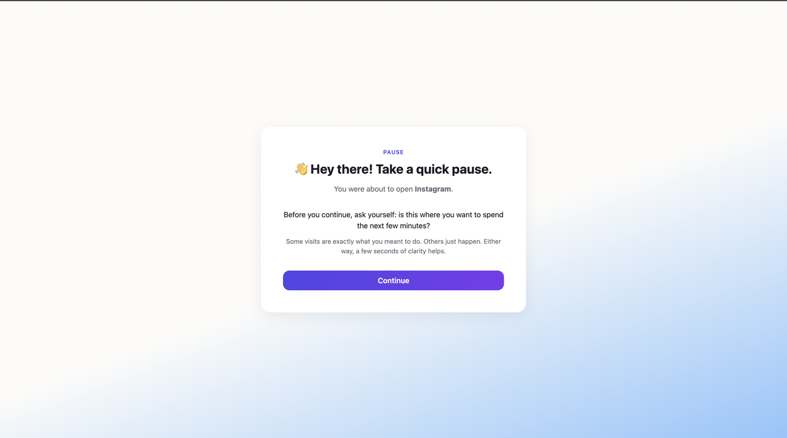
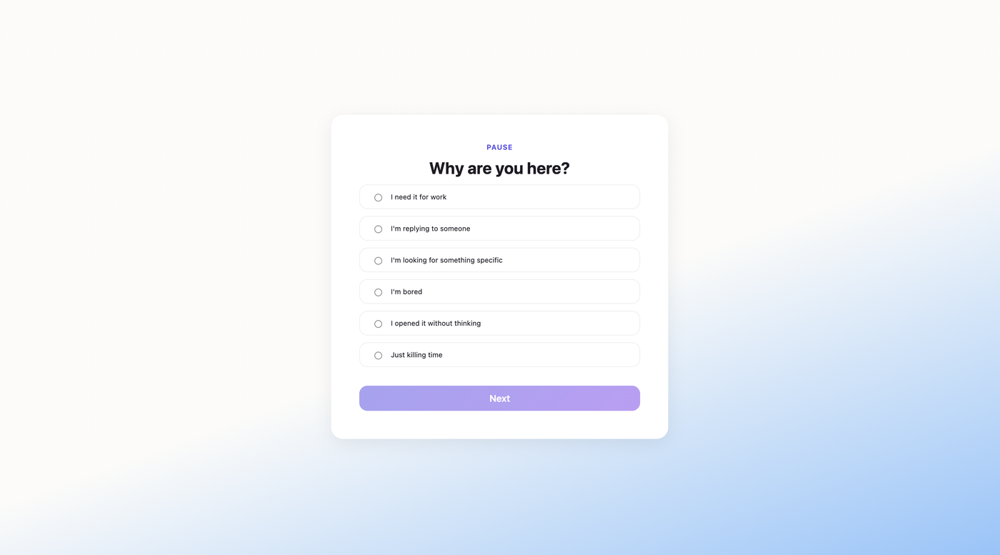
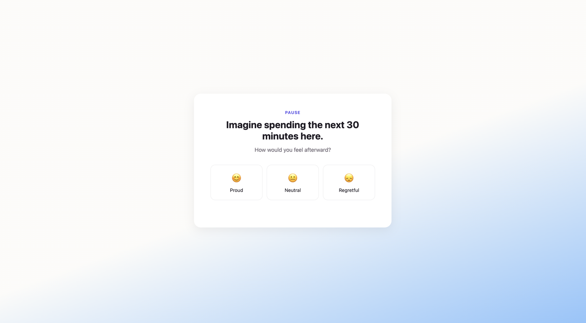
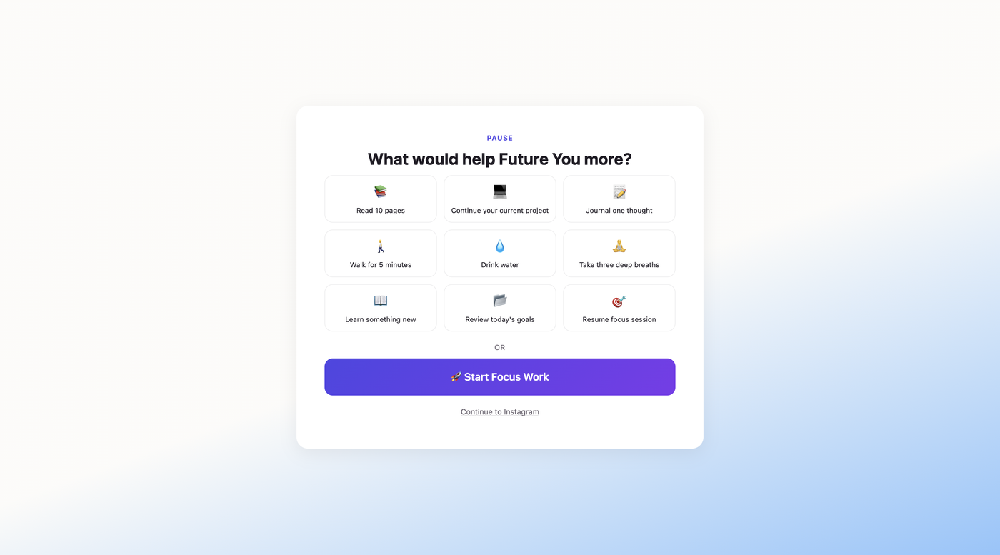
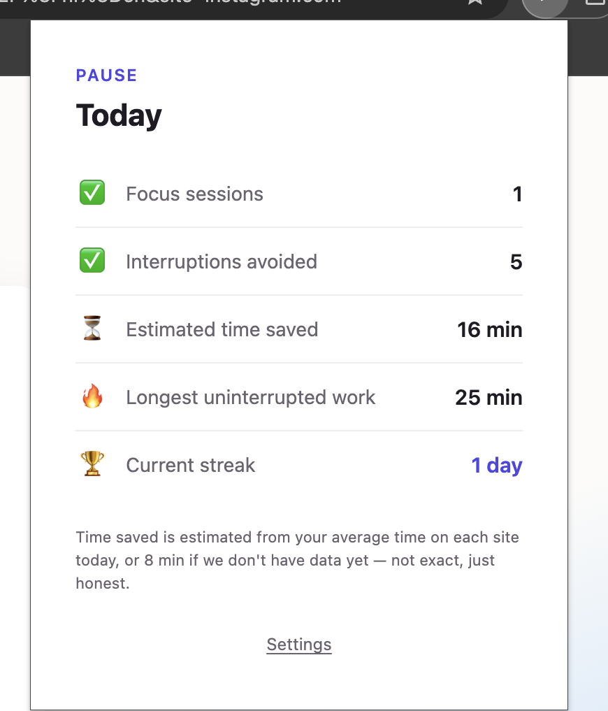

Build with AI · Beginner playbook
Build Your First Chrome Extension with AI, Without Writing the Code Yourself
You don't need to be an AI expert to ship a working browser extension anymore. You need a clear process and the discipline to stay in charge of it. Here's the exact loop, explained for someone starting from zero.
There's a version of "building with AI" that goes badly. You open a chat window, type "build me a Chrome extension that does X," paste whatever comes back, and then spend three frustrated hours trying to figure out why nothing works. No plan, no checkpoints, no idea what the code is even supposed to do.
There's a better version. You treat the AI as an assistant, and you treat yourself as the person who decides what "done" means. The AI writes the code. You stay the judge. That single shift is the whole difference between a weekend of frustration and a working product.
This guide walks through that better version end to end, using a Chrome extension as the concrete example. But the process transfers to almost anything you'll build with AI: a small web app, a script, a tool. Learn the loop once and you can reuse it forever.
To keep this grounded, I'll point to a real extension I built with this exact loop: Pause, a Mindful Decision Assistant. It adds a short breathing pause before distracting sites like Instagram, X, and YouTube load, so you choose to open them on purpose instead of on reflex. The AI I used to write the code was Claude, working inside my editor. The repo is public, so at each step you can open it and see the actual PRD, task list, and files the process produces.

The AI can write code faster than any human. It cannot decide whether that code is right for your goal. That decision is always yours.
Step 1: Define the goal before you touch any tool
Before any AI, before any code, answer one question in plain language: what should this extension actually do for the person using it?
Be specific. "A productivity extension" is not a goal. For the Pause extension, the goal was: "Before any of my time-sink sites (Instagram, X, Reddit, YouTube) finishes loading, show a full-screen breathing pause that makes me consciously choose to continue or step away." That's concrete enough to build against. The clearer you are here, the less the AI has to guess later, and guessing is where things go wrong.
Write down three things:
- The problem you're solving, in one sentence.
- The core action the user takes, and what happens when they take it.
- What "good enough" looks like for a first version, so you know when to stop adding features.
This takes ten minutes and saves you hours. Everything downstream is built on top of this clarity.
Step 2: Turn the goal into a PRD using a strong reasoning model
A PRD is a Product Requirements Document. It's the blueprint. It describes what you're building, who it's for, how it should behave, and what each part needs to do, all in one organized document. Professional product teams write these before a single line of code. You're going to do the same, except the AI does most of the drafting.
Here's the part beginners skip: use the most capable model you have access to for this step. Writing a good PRD is a reasoning task, not a typing task. The AI has to think through edge cases, ordering, and how the pieces fit together. A top-tier model produces a far better blueprint than a lightweight one, and the quality of this document sets the ceiling for everything that follows. This is the one step where the model choice really matters.
I want to build a Chrome extension. Here is the goal: [paste your goal from Step 1] Act as a senior product manager. Write a detailed Product Requirements Document for this extension. Include: the problem, target user, core features, how each feature behaves, the technical components a Chrome extension needs, and any edge cases I should consider. Ask me clarifying questions before writing if anything is unclear.
Notice the last line, asking it to raise questions first. A good model often comes back with things you hadn't considered. That back-and-forth isn't a delay, it's the point. This is a deep research activity, not a one-shot request. Expect a few rounds, refining the document until it genuinely reflects what you want.
Then read it yourself. Every line.
This is the first checkpoint where you act as the judge. The AI produced a plausible blueprint. Your job is to confirm it's the right blueprint. Read the whole PRD slowly and ask: does this match what I actually pictured? Is anything missing? Did it add a feature I don't want in version one?
If something is off, tell the AI what to change and regenerate. Don't move forward until the PRD reads like a description of the thing in your head. Everything you build next assumes this document is correct, so it has to be correct.
For a real example of what you're aiming for, the finished PRD for the Pause extension is in the repo. Notice how much detail it carries before a single line of code exists, that detail is what made the build go smoothly.
Step 3: Set up your workspace
Now you need a place to actually build. That means a code editor, an application designed for working with code and AI together, with an AI assistant running inside it. You don't need to know how to code to use one; the AI does the writing while you direct it. I built Pause in Visual Studio Code with Claude as the assistant, so the AI could read my files and write directly into the project.
Two beginner-friendly editor options:
- Visual Studio Code is the most widely used editor, with huge community support, so any problem you hit has already been answered somewhere online. Pair it with an AI assistant like Claude.
- Antigravity is an AI-first editor built around exactly this kind of AI-assisted workflow, which some beginners find smoother to start with.
Either works. Pick based on which feels less intimidating when you open it. Then set up your project:
- Create a new folder on your computer for the project. Give it a clear, real name, not a placeholder, something like
mindful-decision-assistant. A proper name matters: this folder often becomes your repository name and the extension's identity, so treat it like a real product from day one. - Save your finished PRD inside that folder, for example
PRD-mindful-decision-assistant.md. - Open your editor and open that folder inside it, so the AI assistant can see the PRD and work in the same place.
Now the AI has your blueprint sitting right next to where it's going to build. That context is what makes the next step work.
Step 4: Break the work into phases with a task list
Here's the mistake almost everyone makes: they ask the AI to build the whole thing at once. It generates a wall of code, something breaks somewhere in the middle, and now you have no idea which part failed. You can't test a hundred things at the same time.
The fix is to build in phases. One small, testable piece at a time. Ask the AI to turn your PRD into an ordered task list first.
Read the PRD file in this folder. Based on it, create a file called task.md that breaks the entire build into clear phases. Each phase should be small enough to build and test on its own before moving to the next. Order the phases so each one builds on the last, starting with the most basic working version. For each phase, list the specific tasks and describe how I can test that the phase works.
Now you have a task.md file, a roadmap that goes from "the simplest thing that runs" to "the finished extension" in safe, checkable increments. For Pause, phase one was just getting an empty extension to load in Chrome. Later phases added the list of blocked sites, then the pause screen, then the settings page. You can see the actual task.md from the project to get a feel for how granular each phase should be.
Step 5: Build one phase, then test it yourself
This is the core loop, and it's where your judgment earns its keep. For each phase, do exactly two things.
Let's build Phase 1 from task.md. Implement only that phase, nothing beyond it. When you're done, tell me exactly how to run it and what I should see if it worked.
Then you test it against your flow. Not "does the AI say it works," but does it actually do what you wanted, the way you pictured it in Step 1? Click the thing. Watch what happens. If it matches, move to the next phase. If it doesn't, describe precisely what went wrong and have the AI fix it before you continue.
Testing after every phase means that when something breaks, you know it's in the small piece you just built, not buried somewhere in thousands of lines. Debugging goes from impossible to easy. This one habit is the difference between finishing and giving up.
Repeat the loop, build a phase, test it, approve it, until every phase in your task.md is done. Resist the urge to rush ahead. The discipline is the whole point.
Step 6: Load it into Chrome
Once all phases are built and individually tested, it's time to run the extension in the actual browser. Chrome lets you load an extension straight from a folder on your computer, no app store needed:
- Open Chrome and go to
chrome://extensionsin the address bar. - Turn on Developer mode using the toggle in the top corner.
- Click Load unpacked and select your project folder.
If you're unsure which files Chrome needs, ask your AI assistant: "which files does Chrome need to load this as an unpacked extension, and are they all present in my folder?" It'll check for you. The key file is usually a manifest.json, which tells Chrome what your extension is and how to run it.
Step 7: End-to-end test against your original goal
The final checkpoint. You've tested each phase in isolation. Now test the whole thing working together, as a real user would, from start to finish.
Go back to Step 1 and reread your original goal. Then use the extension exactly the way a real person would, all the way through. Does it deliver what you set out to build? Not "does each piece work," but "does the complete experience match the promise you started with?"
If yes, you're done. You built and shipped a working Chrome extension. If there are gaps, you now know exactly what they are, and you have the loop to close them.
The whole loop, on one real project
Here's how the seven steps actually played out for the Pause extension, start to finish, so you can see the process as one continuous thing rather than a list.
- Goal. Show a full-screen breathing pause before Instagram, X, Reddit, and YouTube load, so opening them becomes a choice, not a reflex.
- PRD. Claude drafted a full Product Requirements Document from that goal. I read it, cut scope that wasn't needed for version one, and locked it.
- Workspace. A folder named
mindful-decision-assistant, the PRD saved inside it, opened in VS Code with Claude as the assistant. - Task list. Claude turned the PRD into a phased task.md, from "empty extension that loads" up to the finished pause screen and settings.
- Phased build. One phase at a time. After each, I loaded it in Chrome and checked it against how I pictured it before letting Claude move on.
- Load and end-to-end test. With every phase done, I ran the whole flow: visit a blocked site, get the pause, choose to continue or leave. It matched the goal.
Here's the actual flow the build produced, screen by screen. This is what "matches the goal" looked like when I ran the end-to-end test.




The full result, code, PRD, task list, and more screenshots, lives in the mindful-decision-assistant repository. If you want to see exactly what "done" looked like before you start your own, open the repo and read those three files in order: PRD, then task list, then the code.
Pause uses a small build tool (Vite) to package the extension, which is why its repo has a few extra files. You don't need that to start. Your first extension can be a plain folder that Chrome loads directly. Add build tooling later, only when the AI suggests it for a specific reason and you understand why.
The takeaways worth keeping
The specific steps above will change as tools evolve. What won't change is the shape of the process, and that's the real thing to learn.
- You are the judge, the AI is the builder. The AI writes code faster than any human, but it can't decide whether that code is right for your goal. That call is always yours, and it's the most valuable thing you bring.
- Clarity upstream prevents chaos downstream. A goal you actually thought through and a PRD you actually read save you from most of the pain people blame on AI.
- Build in phases, test at every checkpoint. Small, verified steps beat one giant leap every time. This is how you stay in control instead of chasing bugs you can't locate.
- Human judgment is the differentiator, not a formality. Anyone can prompt an AI. The people who ship things are the ones who direct it, check its work, and know what good looks like.
The AI didn't build your extension. You did, using the AI as your fastest tool. That distinction is everything.
If you're starting out, pick a small idea, something you genuinely wish existed in your browser, and run it through this loop once. The first project teaches you more than any amount of reading. Then do it again with something bigger. The process holds.